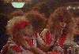
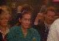

The Film "Cocktail" as described by an Ellen Foley Fan.
"Cocktail", 1988, 99 minutes, colour.
 Film starts, wait 10 mins 40 secs approx, Ellen's first scene. Duration 1 min 12 sec. As drinks waitress, Eleanor,
teasing Brian Flanagan (Tom Cruise) as the new man behind Doug Coughlin's (Bryan Brown) bar, by placing drink orders with
strange names, none of which Flanagan knows, and only a few he knows how to make. Flanagan calls her a "bitch" because of
this.
Film starts, wait 10 mins 40 secs approx, Ellen's first scene. Duration 1 min 12 sec. As drinks waitress, Eleanor,
teasing Brian Flanagan (Tom Cruise) as the new man behind Doug Coughlin's (Bryan Brown) bar, by placing drink orders with
strange names, none of which Flanagan knows, and only a few he knows how to make. Flanagan calls her a "bitch" because of
this.

 Second scene. Duration 30 secs. After closing, Eleanor tells Flanagan that he is supposed to get ten percent from the
waitresses' tips. Flanagan says that he doesn't deserve it, and apologises for calling her a bitch. She admits that she is
a "bitch", winks and leaves. She comments to Coughlin on her way out, "looks like you've got a new disciple. This would be
Ellen's "biggest" scene in the film.
Second scene. Duration 30 secs. After closing, Eleanor tells Flanagan that he is supposed to get ten percent from the
waitresses' tips. Flanagan says that he doesn't deserve it, and apologises for calling her a bitch. She admits that she is
a "bitch", winks and leaves. She comments to Coughlin on her way out, "looks like you've got a new disciple. This would be
Ellen's "biggest" scene in the film.

After a gap of 1 min 40 secs approx, third scene. Duration 1 min 14 secs. Eleanor and other waitresses clowning at the bar
with Flanagan.

After a gap of 3 mins 20 secs approx, forth scene. Duration 53 secs. At the beginning of this scene, Eleanor can be seen
"hogging" the left hand side of shot, (only jokin') and then takes drinks from Flanagan.
Fifth scene containing Ellen commences after a gap of approx 7 mins 30 secs. This is the famous "Hippy Hippy Shake"
bar scene with expert and amazing "synchronised bottle tossing" by Flanagan and Coughlin. Eleanor and other waitresses just
visible at far end of bar. Duration 1 min.
What follows takes about 34 mins 41 secs.
Then Flanagan and Coughlin go to work in another bar.
Flanagan sleeps with a beautiful photographer.
Flanagan goes to Jamaica and meets main girlfriend, Jordan Mooney (Elizabeth Shue).
Coughlin comes to Jamaica with his new wife.
Flanagan sleeps with Miss Mooney for a bit.
Flanagan sleeps with an older woman and looses Miss Mooney.
Flanagan looses older woman and tries to get back together with Miss Mooney.
Flanagan meets Coughlin and his unfaithful wife on a yacht. Flanagan takes Mrs Coughlin home, but refuses her advances. (the
boy has finally learnt something)
Coughlin commits suicide.
Flanagan receives suicide note in the mail.
Flanagan reconciles with Miss Mooney.
 Sixth and final scene containing Ellen. Duration 1 min. Flanagan returns to his uncle Pat's bar, Flanagan and Miss
Mooney to marry. Eleanor seen with some old geezer "Eddie".
Sixth and final scene containing Ellen. Duration 1 min. Flanagan returns to his uncle Pat's bar, Flanagan and Miss
Mooney to marry. Eleanor seen with some old geezer "Eddie".
The film has a good sound track.
Comment:- Ellen's part in this film seems to turn full circle the old cliche of "Actress goes to New York and takes
job as a waitress to make ends meet" even to the extent that the name of her waitress character is Eleanor.
You may have noticed that Ellen has a fairly minor, but no less important role in this film. Well, we have a
saying here in the Ellen Foley Film and Television section.
Go back to the start of Ellen Foley Information.
 Film starts, wait 10 mins 40 secs approx, Ellen's first scene. Duration 1 min 12 sec. As drinks waitress, Eleanor,
teasing Brian Flanagan (Tom Cruise) as the new man behind Doug Coughlin's (Bryan Brown) bar, by placing drink orders with
strange names, none of which Flanagan knows, and only a few he knows how to make. Flanagan calls her a "bitch" because of
this.
Film starts, wait 10 mins 40 secs approx, Ellen's first scene. Duration 1 min 12 sec. As drinks waitress, Eleanor,
teasing Brian Flanagan (Tom Cruise) as the new man behind Doug Coughlin's (Bryan Brown) bar, by placing drink orders with
strange names, none of which Flanagan knows, and only a few he knows how to make. Flanagan calls her a "bitch" because of
this.


{kind=link}
{kind=link}